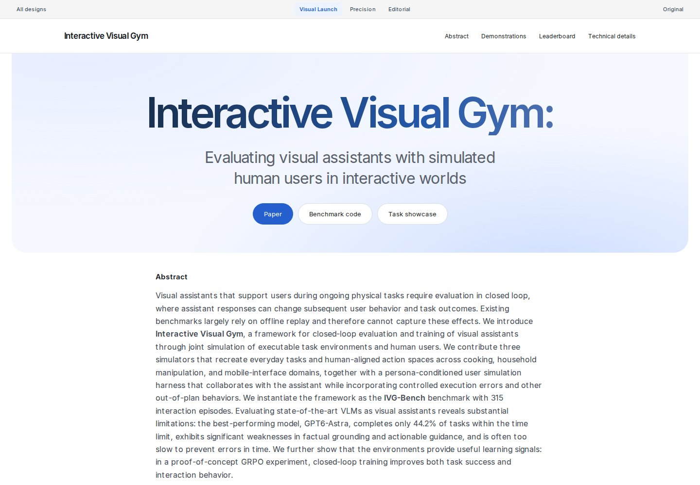
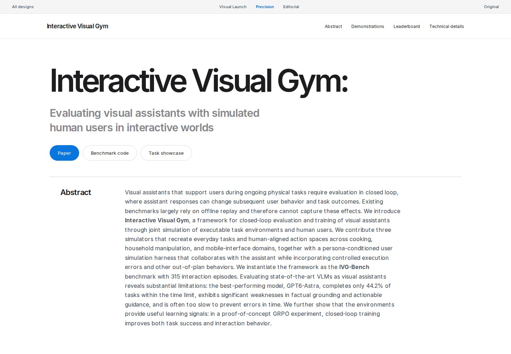
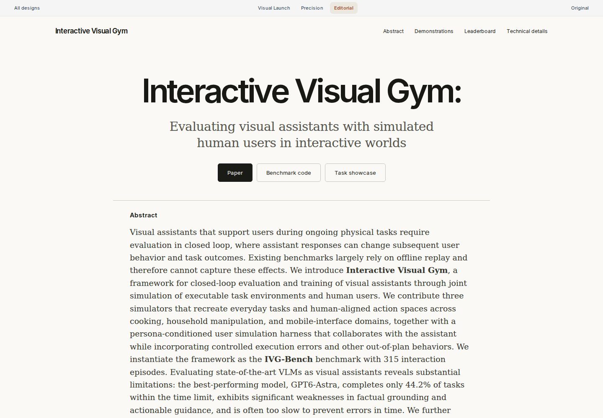

A · Visual LaunchA confident blue-toned opening, expansive media, and clearly separated technical chapters.Reference: Google DeepMind / Genie ↗Full pageTechnical details
B · PrecisionOversized black typography, grey-and-white section stages, and carefully aligned content.Reference: Apple / iPhone ↗Full pageTechnical details
C · EditorialWarm neutral backgrounds, strong sans-serif titles, and a compact serif reading column.Reference: Anthropic / Claude release ↗Full pageTechnical details